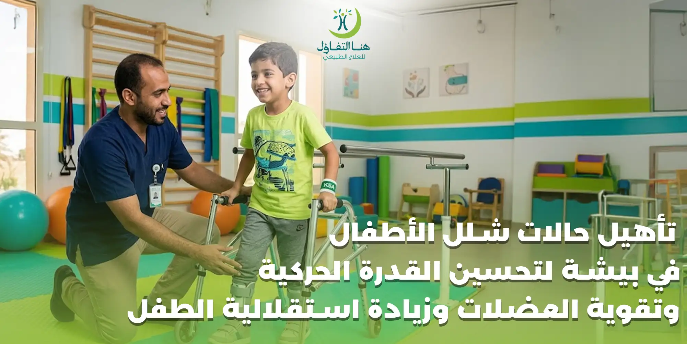

قد تترك الإصابة بشلل الأطفال آثارًا حركية تختلف من طفل إلى آخر، وقد تظهر هذه الآثار في صورة ضعف في بعض العضلات، صعوبة في الوقوف أو المشي، محدودية في حركة أحد الأطراف أو أكثر، أو الحاجة إلى وسائل مساعدة للحركة.
وهنا لا يقتصر دور التأهيل على أداء مجموعة من التمارين فقط، بل يهدف إلى تحسين الوظائف الحركية التي يستطيع الطفل القيام بها، والمحافظة على قدرته البدنية، وتقليل تأثير الضعف الحركي على أنشطته اليومية.
وتشير منظمة الصحة العالمية إلى أن العلاج الطبيعي وإعادة التأهيل يمكن أن يساعدا في تخفيف الأعراض وتحسين الحركة لدى الأشخاص المتأثرين بشلل الأطفال، مع التأكيد على أن التأهيل لا يعكس الشلل الدائم الناتج عن تلف عصبي سابق.
لذلك، يتم تصميم البرنامج التأهيلي وفق حالة الطفل ودرجة الضعف الحركي والأهداف الوظيفية التي يسعى الفريق العلاجي والطفل وأسرته إلى تحقيقها.
ما هو شلل الأطفال؟
شلل الأطفال هو مرض فيروسي يمكن أن يؤثر في الجهاز العصبي، وفي الحالات التي تؤدي إلى الشلل قد تتأثر الخلايا العصبية الحركية، مما ينتج عنه ضعف أو فقدان في القدرة على تحريك بعض العضلات.
وقد يكون التأثير مختلفًا من طفل إلى آخر؛ فبعض الحالات قد يكون لديها ضعف محدود في طرف معين، بينما قد تعاني حالات أخرى من تأثير أكبر على القدرة على الوقوف أو المشي والحركة.
وتوضح المصادر الطبية أن الشلل الناتج عن الإصابة قد يكون غير متناظر، وقد تكون بعض الأطراف أكثر تأثرًا من غيرها.
ومن هنا تأتي أهمية التقييم الدقيق قبل وضع البرنامج العلاجي، لأن خطة تأهيل طفل تختلف عن خطة طفل آخر حتى لو كانت الحالة المرضية متشابهة.
ما الهدف من تأهيل الأطفال المصابين بآثار شلل الأطفال؟
الهدف الأساسي من التأهيل هو الوصول إلى أفضل مستوى وظيفي ممكن للطفل وفق حالته.
وقد تشمل الأهداف:
- تحسين القدرة على الحركة.
- دعم قوة العضلات التي ما زالت قادرة على العمل.
- المحافظة على مدى حركة المفاصل.
- تحسين القدرة على الجلوس والوقوف.
- تطوير القدرة على المشي عندما تكون ممكنة.
- تحسين التوازن والتحكم في الجسم.
- تدريب الطفل على استخدام وسائل الحركة المساعدة عند الحاجة.
- زيادة الاعتماد على النفس في الأنشطة اليومية.
- تقليل تأثير الضعف العضلي على حياة الطفل.
- المساعدة في الحد من بعض المضاعفات الحركية وفق تقييم الحالة.
- دعم مشاركة الطفل في اللعب والأنشطة المدرسية والاجتماعية.
وتؤكد منظمة الصحة العالمية أن الهدف من إعادة التأهيل بشكل عام هو مساعدة الشخص على استعادة الأداء الوظيفي أو المحافظة عليه أو تحسينه بما يدعم الاستقلالية والمشاركة في الحياة اليومية.
لماذا يحتاج الطفل المصاب بآثار شلل الأطفال إلى برنامج تأهيلي متخصص؟
لأن التعامل مع الضعف الحركي الناتج عن شلل الأطفال يحتاج إلى فهم دقيق لما يستطيع الطفل القيام به وما لا يستطيع القيام به.
فليس الهدف أن يؤدي الطفل أكبر عدد ممكن من التمارين، وإنما أن يتم اختيار الأنشطة المناسبة لقدراته وأهدافه.
وقد يحتاج الطفل إلى العمل على أكثر من جانب في الوقت نفسه، مثل:
كما أن البرنامج قد يتغير مع نمو الطفل وتطور قدراته واحتياجاته.
وتشير منظمة الصحة العالمية إلى أن خدمات إعادة التأهيل تركز على الشخص نفسه، بحيث يتم اختيار التدخلات بما يتناسب مع أهدافه واحتياجاته، وقد تشمل العلاج الطبيعي والوظيفي والأجهزة المساعدة وغيرها من الخدمات بحسب الحالة.
تقييم حالة الطفل قبل بدء التأهيل
تبدأ الخطة الجيدة بالتقييم، وليس بالتمارين.
خلال التقييم يمكن لأخصائي العلاج الطبيعي التعرف على مستوى الحركة الحالي لدى الطفل وتحديد الجوانب التي تحتاج إلى تدخل.
تقييم قوة العضلات
يتم التعرف على مستوى القوة في العضلات المختلفة وملاحظة العضلات التي تحتاج إلى تدريب أو دعم وظيفي.
تقييم مدى حركة المفاصل
يساعد ذلك في معرفة وجود أي محدودية في الحركة قد تؤثر على الوقوف أو المشي أو استخدام الطرف.
تقييم القدرة على الجلوس والوقوف
يتم تقييم مدى قدرة الطفل على التحكم في وضعية الجسم والانتقال بين الأوضاع المختلفة.
تقييم المشي
عندما يستطيع الطفل المشي، يمكن تقييم طريقة المشي والتوازن وتوزيع الوزن والحاجة إلى وسيلة مساعدة.
تقييم التوازن
التوازن عنصر مهم في الحركة، خصوصًا أثناء الوقوف والمشي وتغيير الاتجاه.
تقييم الأنشطة اليومية
لا يقتصر التقييم على الحركة داخل غرفة العلاج؛ بل يمكن النظر إلى قدرة الطفل على أداء الأنشطة اليومية مثل الانتقال، واللعب، واستخدام اليدين، وارتداء الملابس أو غيرها حسب عمره وقدراته.
برامج تقوية العضلات للأطفال المصابين بشلل الأطفال
تقوية العضلات قد تكون أحد مكونات البرنامج التأهيلي عندما تكون مناسبة لحالة الطفل.
لكن من المهم عدم التعامل مع تقوية العضلات باعتبارها برنامجًا واحدًا يصلح لجميع الحالات.
فقد تحتاج بعض العضلات إلى تدريب وظيفي، بينما قد تكون عضلات أخرى أكثر ضعفًا أو تأثرًا، وبالتالي تحتاج الخطة إلى تعديل التمارين وشدتها وطريقة تنفيذها.
والهدف ليس إجهاد الطفل، وإنما تحسين استخدام العضلات القادرة على العمل والمحافظة على أفضل مستوى وظيفي ممكن.
وقد تتضمن الجلسات تدريبات مرتبطة بـ:
- تحريك الأطراف.
- التحكم في وضعية الجسم.
- دعم القدرة على الجلوس.
- التدريب على الوقوف.
- نقل الوزن.
- الحركة من الجلوس إلى الوقوف.
- التدرج في تدريبات المشي.
- الأنشطة الحركية المناسبة لعمر الطفل.
وتوضح منظمة الصحة العالمية أن العلاج الطبيعي يمكن أن يساعد في تحسين الحركة وتخفيف الأعراض لدى المتأثرين بشلل الأطفال.
تأهيل ضعف عضلات الأطراف عند الأطفال
قد يظهر تأثير شلل الأطفال في أحد الأطراف أو أكثر، ولذلك يهتم البرنامج التأهيلي بتقييم الطرف المتأثر والطرف الآخر وكذلك الجذع.
الأطراف السفلية
عندما يكون الضعف في الساقين، يمكن أن يرتبط التأهيل بتحسين القدرة على الوقوف والمشي والتوازن واستخدام وسائل الدعم المناسبة.
الأطراف العلوية
إذا كان هناك ضعف في الذراع أو اليد، فقد يتم التركيز على استخدام الطرف في الأنشطة اليومية واللعب والمهارات التي تناسب عمر الطفل.
عضلات الجذع
يساعد التحكم الجيد في الجذع على دعم العديد من الأنشطة الحركية، ولذلك قد يتضمن البرنامج أنشطة لتحسين التحكم في وضعية الجسم وفق قدرة الطفل.
تأهيل المشي للأطفال المصابين بآثار شلل الأطفال
المشي من أهم الأهداف التي قد تسعى الأسرة إلى تحسينها عندما تسمح حالة الطفل بذلك.
ولا يعني تأهيل المشي أن كل طفل سيصل إلى المشي المستقل، لأن النتيجة تعتمد على درجة الإصابة والوظائف الحركية المتبقية وعوامل أخرى.
لكن عندما تكون القدرة على المشي ممكنة، يمكن أن يتضمن التأهيل تدريبات تدريجية مرتبطة بالوظيفة، مثل:
- التدريب على الوقوف.
- نقل الوزن بين الطرفين.
- تحسين التحكم في الجذع.
- التدريب على خطوات المشي.
- تحسين التوازن أثناء الحركة.
- التدريب باستخدام المشاية عند الحاجة.
- التدريب باستخدام العكازات أو وسائل مساعدة أخرى وفق التقييم.
- الانتقال التدريجي إلى مستويات أكثر استقلالية عندما يكون ذلك مناسبًا.
وقد وثقت منظمة الصحة العالمية حالات استفاد فيها أطفال متأثرون بشلل الأطفال من العلاج الطبيعي والتدريب الحركي واستخدام معدات مساعدة على الحركة، مع تعديل التمارين وفق تقدم الطفل.
الأجهزة المساعدة في تأهيل الطفل
قد يحتاج بعض الأطفال إلى أجهزة أو وسائل مساعدة لتحسين الحركة أو توفير الدعم أثناء الوقوف والمشي.
ومن أمثلتها:
- • المشايات.
- • العكازات.
- • الكراسي المتحركة عند الحاجة.
- • الدعامات والأجهزة التقويمية للأطراف.
- • الأحذية الطبية أو الأجهزة المساعدة التي يوصي بها المختص.
ولا ينبغي اختيار الجهاز بشكل عشوائي، لأن الوسيلة المناسبة تعتمد على حالة الطفل وطريقة حركته ودرجة الضعف والهدف الوظيفي.
وتشير مصادر منظمة الصحة العالمية إلى أهمية الأجهزة التقويمية والوسائل المساعدة في تحسين الحركة لدى بعض الأطفال المتأثرين بآثار شلل الأطفال، وكذلك دورها في المساعدة على الحد من بعض التشوهات الناتجة عن تثبيت الأطراف في أوضاع غير مناسبة.
المحافظة على مدى حركة المفاصل
ضعف العضلات وقلة الحركة قد يؤثران على استخدام بعض المفاصل مع مرور الوقت.
لذلك قد يهتم البرنامج التأهيلي بالمحافظة على مدى الحركة المتاح، وتجنب بقاء المفصل في وضعية واحدة لفترات طويلة، بحسب تقييم الحالة.
وقد تشمل الجلسات حركات وتمارين موجهة للحفاظ على مرونة المفاصل والقدرة على استخدامها في الأنشطة الوظيفية.
والهدف هنا ليس إجبار المفصل على حركة معينة، وإنما العمل ضمن الحدود المناسبة للحالة وبإشراف المختص.
التأهيل الحركي بطريقة مناسبة لعمر الطفل
الطفل ليس شخصًا بالغًا صغير الحجم، ولذلك يجب أن تراعي جلسات التأهيل عمره وقدراته وطريقة تفاعله.
ومن الأفضل أن تكون الأنشطة:
- مناسبة لعمر الطفل.
- مرتبطة باهتماماته.
- آمنة.
- تدريجية.
- ذات هدف وظيفي واضح.
- قابلة للدمج في الحياة اليومية.
وقد يكون اللعب نفسه وسيلة مهمة لدمج الحركة داخل الجلسة، بحيث يشعر الطفل بأنه يشارك في نشاط ممتع بدلًا من أن تكون الجلسة مجرد تكرار للتمارين.
وتشير توصيات AACPDM المتعلقة بالتدخلات الحركية للأطفال ذوي الإعاقات الحركية إلى أهمية أن تكون التدخلات موجهة نحو الأهداف والوظيفة والمشاركة في الأنشطة اليومية، مع إشراك الطفل بصورة نشطة قدر الإمكان.
دور الأسرة في تأهيل الطفل
الأسرة عنصر أساسي في رحلة التأهيل.
فالنتائج لا تعتمد فقط على الوقت الذي يقضيه الطفل داخل مركز العلاج، وإنما يمكن أن يكون من المفيد دمج التوجيهات المناسبة في الروتين اليومي للطفل.
وقد يتعلم الوالدان من الأخصائي:
- • كيفية مساعدة الطفل في الحركة بأمان.
- • كيفية استخدام الجهاز المساعد إذا كان موصوفًا.
- • كيفية تنفيذ الأنشطة المنزلية التي أوصى بها المختص.
- • الوضعيات المناسبة أثناء الجلوس أو اللعب.
- • كيفية التعامل مع بعض الصعوبات الحركية اليومية.
وفي بعض برامج التأهيل، يمكن استمرار الأنشطة الحركية في المنزل مع متابعة الفريق المعالج وتعديلها وفق تطور الطفل. وقد أشارت منظمة الصحة العالمية إلى أهمية استمرارية التدريب والمتابعة المنزلية في تجربة تأهيل طفل مصاب بشلل الأطفال.
هل يمكن أن يستفيد الطفل من العلاج الطبيعي بعد مرور فترة على الإصابة؟
نعم،
يمكن أن يكون للتأهيل دور في تحسين الوظيفة والمحافظة عليها حتى بعد مرور فترة على الإصابة، لكن طبيعة الأهداف تختلف من حالة إلى أخرى.
ففي بعض الحالات يكون التركيز على استعادة وظيفة حركية، وفي حالات أخرى يكون الهدف هو المحافظة على القدرة الموجودة، وتحسين الاستقلالية، وتسهيل الحركة باستخدام الوسائل المساعدة المناسبة.
وتوضح منظمة الصحة العالمية أن إعادة التأهيل قد تستهدف استعادة الأداء الوظيفي أو المحافظة عليه أو تحسينه بحسب طبيعة الحالة.
لذلك لا ينبغي الحكم على إمكانية الاستفادة من التأهيل اعتمادًا على عمر الطفل أو المدة التي مرت على الإصابة فقط، وإنما بعد تقييم متخصص.
هل يمكن أن يعود الطفل للمشي بعد شلل الأطفال؟
هذا من أكثر الأسئلة التي تشغل الأسرة، والإجابة تعتمد على الحالة.
لا يمكن إعطاء وعد بأن كل طفل سيستعيد المشي، لأن شدة الإصابة ومقدار الضعف العضلي والوظائف العصبية المتبقية تختلف من طفل إلى آخر.
لكن عندما تكون هناك إمكانية وظيفية للمشي، يمكن أن يركز البرنامج على تطوير المهارات اللازمة لذلك، مثل:
- • التحكم في الجذع.
- • الوقوف.
- • التوازن.
- • نقل الوزن.
- • تقوية العضلات القابلة للتدريب.
- • التدريب على الخطوات.
- • استخدام الأجهزة المساعدة عند الحاجة.
وفي بعض الحالات قد يكون الهدف الواقعي هو تحسين المشي مع جهاز مساعد، بينما قد يكون الهدف في حالات أخرى هو زيادة الاستقلالية باستخدام الكرسي المتحرك أو وسائل أخرى.
النجاح في التأهيل لا يعني دائمًا المشي دون مساعدة؛ بل قد يعني الوصول إلى أكبر قدر ممكن من الاستقلالية والأمان وفق قدرات الطفل.
أهمية المتابعة مع نمو الطفل
احتياجات الطفل الحركية قد تتغير مع النمو.
فالجهاز المساعد الذي كان مناسبًا في مرحلة عمرية قد يحتاج إلى تعديل أو استبدال، كما قد تتغير أهداف التأهيل مع تطور قدرات الطفل ودخوله المدرسة وزيادة متطلبات الحركة اليومية.
ولهذا من المهم أن تكون هناك متابعة دورية وإعادة تقييم عند حدوث تغير واضح في:
- طريقة المشي.
- مستوى القوة.
- القدرة على الوقوف.
- التوازن.
- الحركة.
- القدرة على استخدام أحد الأطراف.
- القدرة على أداء الأنشطة اليومية.
علامات تستدعي إعادة تقييم الحالة
يُنصح بالتواصل مع الطبيب أو الفريق المعالج عند ظهور تغير جديد أو ملحوظ في حالة الطفل، مثل:
- ضعف جديد أو متزايد.
- تراجع واضح في القدرة على المشي.
- ظهور ألم مستمر.
- تغير ملحوظ في طريقة الحركة.
- زيادة صعوبة أداء الأنشطة اليومية.
- ظهور مشكلات جديدة في المفاصل أو الأطراف.
- صعوبة تنفس أو بلع، خصوصًا لدى الحالات التي لديها تأثر عصبي أوسع.
تنبيه هام:
ولا ينبغي اعتبار كل ضعف جديد مجرد جزء طبيعي من الحالة دون تقييم طبي.
التأهيل لا يعني إجهاد الطفل
من الأخطاء الشائعة الاعتقاد بأن زيادة عدد التمارين أو زيادة شدة الجلسة تعني بالضرورة نتائج أفضل.
في الواقع، برنامج التأهيل يجب أن يراعي حالة الطفل وقدرته على أداء النشاط بأمان.
فالهدف هو التدريب المناسب وليس الإجهاد.
كما يجب تعديل البرنامج إذا ظهرت علامات عدم تحمل النشاط أو الألم أو تغير واضح في الأداء، ويحدد المختص مستوى وشدة التدريب المناسبين لكل طفل.
ما الفرق بين التأهيل والعلاج التقليدي؟
التأهيل لا يركز فقط على عضلة واحدة أو حركة واحدة.
فمثلًا، إذا كان الطفل يعاني من ضعف في إحدى الساقين، فإن الهدف قد لا يكون فقط زيادة قوة العضلة، وإنما معرفة كيف يؤثر هذا الضعف على:
وهذا هو سبب أهمية النظر إلى الطفل ككل ووضع أهداف وظيفية مرتبطة بحياته اليومية.
وتوضح منظمة الصحة العالمية أن إعادة التأهيل تركز على تحسين قدرة الشخص على أداء الأنشطة والمشاركة في الحياة اليومية، وقد تشمل العمل على الحركة والمهارات والبيئة والأجهزة المساعدة.
كيف يتم تصميم برنامج تأهيل حالات شلل الأطفال؟
يمكن أن يمر البرنامج بشكل عام بالمراحل التالية:
1. التقييم الأولي
التعرف على الحالة ومستوى الحركة والقوة ومدى الحركة والتوازن والقدرات الوظيفية.
2. تحديد الأهداف
تحديد أهداف واقعية ومناسبة لعمر الطفل، مثل تحسين الوقوف أو المشي أو استخدام الطرف المصاب أو زيادة الاستقلالية.
3. اختيار التدخلات المناسبة
يتم اختيار التمارين والأنشطة والتدريبات وفق نتائج التقييم.
4. التدريب داخل الجلسات
تنفيذ الأنشطة العلاجية بصورة تدريجية وتحت إشراف المختص.
5. التدريب الوظيفي
ربط المهارات التي يتم التدريب عليها بالأنشطة التي يحتاجها الطفل في حياته اليومية.
6. البرنامج المنزلي
عند ملاءمته للحالة، يتم توجيه الأسرة إلى أنشطة منزلية مناسبة.
7. إعادة التقييم
متابعة التطور وتعديل البرنامج وفق استجابة الطفل وأهدافه الجديدة.
لماذا تختلف مدة التأهيل من طفل لآخر؟
لا توجد مدة واحدة مناسبة لجميع الأطفال.
فمدة التأهيل تعتمد على عدة عوامل، منها:
- درجة الضعف الحركي.
- عدد الأطراف المتأثرة.
- عمر الطفل.
- مستوى الحركة الحالي.
- وجود مشكلات في المفاصل.
- القدرة على التعاون أثناء الجلسة.
- الأهداف المطلوبة.
- الاستجابة للتدريب.
- الحاجة إلى أجهزة مساعدة.
لذلك يتم تحديد عدد الجلسات ووتيرتها بعد تقييم الطفل، وليس من خلال رقم ثابت ينطبق على جميع الحالات.
وتؤكد منظمة الصحة العالمية أن عدد جلسات إعادة التأهيل يعتمد على احتياجات الشخص وحالته، وأن النتائج تختلف بحسب شدة الحالة ومستوى الوظيفة.
هل يحتاج الطفل إلى العلاج الطبيعي فقط؟
ليس بالضرورة.
في بعض الحالات قد يحتاج الطفل إلى أكثر من تخصص، بحسب الأعراض والاحتياجات.
وقد يشارك في الرعاية:
- • طبيب الأطفال أو الطبيب المتخصص.
- • أخصائي العلاج الطبيعي.
- • أخصائي العلاج الوظيفي.
- • أخصائي النطق واللغة عند وجود مشكلات مرتبطة بالكلام أو البلع.
- • أخصائي الأجهزة التقويمية والأطراف الصناعية عند الحاجة.
- • تخصصات أخرى حسب الحالة.
وتوضح منظمة الصحة العالمية أن إعادة التأهيل قد تعتمد على تعاون عدة تخصصات للوصول إلى رعاية أكثر شمولًا، ومنها العلاج الطبيعي والوظيفي وعلاج النطق والأجهزة التقويمية وغيرها.
أهمية التأهيل المبكر والمتابعة المستمرة
عندما يحتاج الطفل إلى إعادة تأهيل، فإن التقييم والتدخل المناسبين في الوقت المناسب يمكن أن يساعدا في التعامل مع الصعوبات الوظيفية ومتابعة تطور الحالة.
وتشير منظمة الصحة العالمية إلى أهمية خدمات إعادة التأهيل في تحسين الأداء الوظيفي والاستقلالية، بينما توضح مصادرها المتعلقة بشلل الأطفال أهمية العلاج الطبيعي والأجهزة المساعدة في التعامل مع آثار الشلل.
لكن الأهم هو أن يكون التدخل مناسبًا للحالة وليس مجرد تدخل مكثف لمجرد كونه مكثفًا.
تأهيل حالات شلل الأطفال في بيشة مع هنا التفاؤل
في مركز هنا التفاؤل للعلاج الطبيعي والتأهيل الطبي في بيشة، يمكن أن تبدأ رحلة الطفل بتقييم حالته وقدراته الحركية، ثم تحديد الجوانب التي تحتاج إلى دعم وتأهيل وفق حالته.
ويمكن أن تركز البرامج التأهيلية على:
- • تقوية العضلات القابلة للتدريب.
- • تحسين الحركة.
- • تدريب التوازن.
- • تحسين التحكم في الجسم.
- • التدريب على الوقوف.
- • تأهيل المشي.
- • التدريب على استخدام الوسائل المساعدة عند الحاجة.
- • تحسين الاستقلالية في الأنشطة اليومية.
- • توجيه الأسرة إلى الأنشطة المنزلية المناسبة.
- • متابعة تطور الطفل وإعادة تقييم أهداف البرنامج.
والهدف من البرنامج ليس مجرد إتمام الجلسات، وإنما مساعدة الطفل على استخدام قدراته الحركية بأفضل صورة ممكنة وزيادة قدرته على الاعتماد على نفسه والمشاركة في حياته اليومية.
متى تحتاج الأسرة إلى استشارة أخصائي العلاج الطبيعي؟
يمكن طلب تقييم متخصص إذا كان الطفل يعاني من آثار حركية مرتبطة بشلل الأطفال، مثل:
- ضعف في أحد الأطراف.
- صعوبة في الوقوف.
- صعوبة في المشي.
- عدم القدرة على المشي باستقلالية.
- اختلاف واضح بين قوة طرف وآخر.
- ضعف في التوازن.
- محدودية في حركة المفاصل.
- الحاجة إلى وسيلة مساعدة للحركة.
- صعوبة في أداء الأنشطة اليومية.
- الحاجة إلى برنامج تمارين منزلي مناسب.
ويُفضّل ألا تبدأ الأسرة تمارين قوية أو برنامجًا علاجيًا من تلقاء نفسها، لأن طبيعة الضعف والقدرات الحركية تختلف من طفل لآخر.
أسئلة شائعة عن تأهيل حالات شلل الأطفال
هل العلاج الطبيعي يعالج شلل الأطفال نهائيًا؟
لا يوجد علاج يعكس الشلل الدائم الناتج عن تلف عصبي سابق بسبب شلل الأطفال، لكن العلاج الطبيعي وإعادة التأهيل قد يساعدان على تحسين الحركة والوظيفة وتخفيف بعض الأعراض ودعم الاستقلالية بحسب حالة الطفل.
هل يمكن أن يساعد العلاج الطبيعي الطفل على المشي؟
قد يساعد التأهيل بعض الأطفال على تطوير أو تحسين مهارات المشي عندما تسمح حالتهم بذلك، لكن لا يمكن ضمان استعادة المشي لكل الحالات. ويتم تحديد الأهداف بعد تقييم القدرات الحركية للطفل.
هل تقوية العضلات مهمة بعد شلل الأطفال؟
قد تكون تقوية العضلات جزءًا من البرنامج التأهيلي عندما تكون مناسبة للحالة، لكن يجب تحديد العضلات والتمارين وشدة التدريب وفق تقييم متخصص.
هل يحتاج الطفل إلى جلسات علاج طبيعي بشكل مستمر؟
قد تحتاج بعض الحالات إلى متابعة طويلة المدى، بينما تختلف وتيرة الجلسات من طفل إلى آخر. ويعتمد ذلك على مستوى الوظيفة والأهداف والتغيرات التي تحدث مع النمو.
هل يمكن استخدام المشاية أو العكازات؟
نعم، قد تكون بعض الوسائل المساعدة مناسبة لبعض الأطفال، لكن اختيارها يجب أن يتم بعد تقييم الحركة والوقوف والمشي وطريقة استخدام الطرف.
هل يحتاج الطفل إلى جهاز تقويمي للساق؟
قد تحتاج بعض الحالات إلى أجهزة تقويمية لدعم الطرف أو تحسين الحركة، ويحدد المختص مدى ملاءمتها ونوعها بناءً على حالة الطفل.
هل يمكن ممارسة التمارين في المنزل؟
يمكن أن يوصي أخصائي العلاج الطبيعي ببرنامج منزلي مناسب، على أن يكون متوافقًا مع حالة الطفل وأهداف العلاج وطريقة أدائه الصحيحة.
هل يمكن بدء التأهيل بعد مرور سنوات على الإصابة؟
قد يظل التأهيل مفيدًا لتحسين أو المحافظة على الوظيفة وزيادة الاستقلالية حتى بعد مرور فترة على الإصابة، لكن الأهداف تختلف حسب حالة الطفل ومستوى الوظيفة الحالي.
هل كل طفل مصاب بشلل الأطفال يحتاج إلى نفس البرنامج؟
لا. تختلف آثار شلل الأطفال بين الأطفال، ولذلك يجب أن يكون البرنامج فرديًا وفق مستوى القوة والحركة والتوازن والقدرة الوظيفية.
متى يجب إعادة تقييم الطفل؟
عند حدوث تغير ملحوظ في الحركة أو القوة أو المشي أو التوازن أو ظهور ألم أو صعوبة جديدة في الأنشطة اليومية، يفضل إجراء تقييم طبي أو تأهيلي مناسب.
ابدأ رحلة تأهيل طفلك بخطة تناسب حالته
تأهيل الأطفال المتأثرين بآثار شلل الأطفال يحتاج إلى تقييم دقيق، وأهداف واقعية، وتدرج في التدريب، ومتابعة مستمرة. فالهدف ليس إجبار الطفل على أداء حركات لا يستطيع القيام بها، وإنما اكتشاف قدراته الحالية والعمل على تطويرها خطوة بخطوة، مع التركيز على الحركة والاستقلالية والمشاركة في الحياة اليومية.
إذا كان طفلك يعاني من ضعف حركي أو صعوبة في المشي أو يحتاج إلى برنامج تأهيلي بعد الإصابة بشلل الأطفال، يمكن تقييم حالته ووضع برنامج يناسب احتياجاته وقدراته.